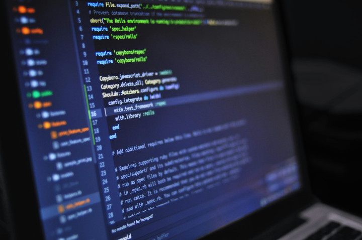

Cursos de graduação e tecnologo para alavancar sua carreira:
- Ciência da Computação é uma formação acadêmica voltada para o estudo aprofundado dos fundamentos, teorias e práticas que envolvem o desenvolvimento de tecnologias computacionais. Ele visa capacitar os alunos a criar soluções inovadoras utilizando sistemas computacionais, preparando-os para lidar com desafios complexos em diversas áreas da computação, como programação, segurança, inteligência artificial e redes de computadores.
- Engenharia da Computação é uma formação que combina princípios da engenharia elétrica e da ciência da computação, focando no desenvolvimento de sistemas computacionais e eletrônicos. O objetivo é capacitar profissionais para projetar, desenvolver e implementar soluções tecnológicas que atendam às necessidades do mercado, abrangendo desde hardware até software.
- Sistemas de Informação é uma formação que combina conhecimentos de tecnologia da informação, gestão e comunicação, focando na análise, desenvolvimento e gerenciamento de sistemas que suportam as operações e decisões das organizações. O objetivo é capacitar profissionais para atuar na interseção entre tecnologia e negócios, facilitando a transformação digital nas empresas.
- Engenharia de Software é uma formação especializada que se concentra no desenvolvimento, implementação e manutenção de sistemas de software de alta qualidade. O objetivo principal é capacitar profissionais para planejar, projetar e gerenciar projetos de software, utilizando metodologias e práticas que garantam a eficácia e a eficiência no desenvolvimento de soluções tecnológicas.
- Análise e Desenvolvimento de Sistemas é uma formação técnica e prática que se concentra na criação, implementação e manutenção de sistemas de software. O foco principal é capacitar profissionais a entender as necessidades dos usuários e desenvolver soluções que otimizem processos organizacionais, abrangendo desde a análise de requisitos até a programação e testes de software.
Ciencia da computação:

Engenharia da computação:
Sistemas de informação:
Engenharia de software:
Analise e desenvolvimento de Sistemas: